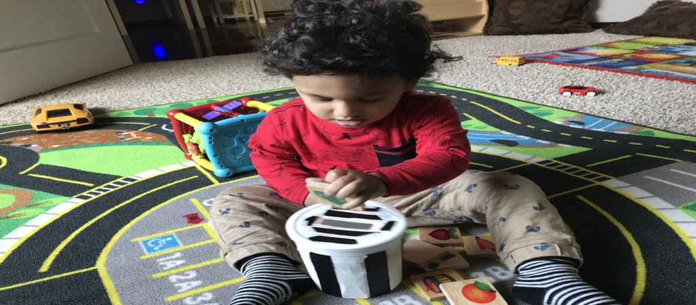
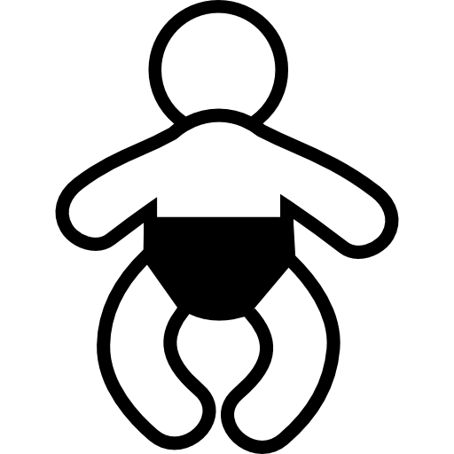
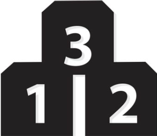

Infants
3 to 12 months
Contact us for details
Toddler
12 to 18 months
Contact us for details

Preschooler
18 to 48 months
Contact us for details
Other
Contact us for other programs like - before/after school, evening care, off hour care etc
Program Features

High-quality care is the result of a combination of a healthy and safe environment together with educational and social stimulation appropriate to
the age and development of the children being served. These features of quality child care include both structural elements relating to the physical
environment and staffing requirement and process elements relating to curricular practices, caregiver qualities, and parental involvement.
With our years of experience and expertise, we have designed our program such that our center is felt like home and parents can be assured of safety. Some of these features includes but not limited to:
With our years of experience and expertise, we have designed our program such that our center is felt like home and parents can be assured of safety. Some of these features includes but not limited to:
We help young children become independent by allowing and encouraging them to take responsibility for themselves whenever possible.
Children learn so much from doing things for themselves. When children practice self-help skills such as feeding and dressing themselves,
they practice their large and fine motor skills, gain confidence in their ability to try new things and build their self-esteem and
pride in their independence.
Social-emotional development includes the child’s experience, expression, and management of emotions and the ability to establish
positive and rewarding relationships with others (Cohen and others 2005). We help young children develop the following social and
emotional skills according to developmentally appropriate:
- Ability to follow directions
- Ability to focus attention
- Ability to take turns
- Ability to control themselves
- Ability to solve problems with words rather than through aggression
- Ability to work independently
- Ability to work well in a group
- Age-appropriate social skills and ability to make friends
- Skills communicating with other children
- Skills communicating with adults
Developing Language and Literacy skills are important for young children to their development.
We help children on their ideas, thoughts, and feelings through speaking and writing, and their ability to demonstrate early
reading skills according to developmentally appropriate.
Large motor skills develop rapidly during the early childhood years. Large motor skills involve the larger muscles in
the body and enable functions such as walking, jumping, kicking, lifting, throwing and sitting upright, possible.
We support a child’s ability to express and regulate.
Fine motor skills are essential to complete tasks such as writing, cutting, using a fork or spoon, threading beads,
moving puzzle pieces, zipping, buttoning, and tying shoe laces.
We give a child plenty of opportunities to build small-muscle skills.
Cognitive skill development in children involves the progressive building of learning skills, such as attention,
memory and thinking. We support a child to make sense of the world, and understand knowledge across different subjects,
including mathematics, science, and social studies.
Infant care
(6 months and above)
Our goal is to babies feel safe, secure, and happy in our care.
Warm, caring teachers bond and develop trust with children.
Warm, caring teachers bond and develop trust with children.
In this program, children are provided with:
- Nurturing classroom environments
- Educational toys
- Age appropriate activities
- Focus on child developmental milestones
Toddler care
(12 to 30 months)
Toddlers are extremely curious and active learners.
For toddlers develop our care has given plenty of room to move and explore.
We provide nurturing guidance as they develop physical skills and master emerging milestones.
For toddlers develop our care has given plenty of room to move and explore.
We provide nurturing guidance as they develop physical skills and master emerging milestones.
In this program, children are provided with:
- Stimulating classroom environments
- Providing toddlers with all the tools and activities needed to grow and learn in a way that is developmentally appropriate and geared towards each child's unique personality.
- Focus on child developmental milestones
Preschool care
(2.5 years and up)
Our preschool program is designed to support the developmental achievements of the preschool years.
To engage and nurture your child, we provide a balance of freedom and instruction.
To engage and nurture your child, we provide a balance of freedom and instruction.
In this program, children are provided with:
- Skills for learning
- Child directed activity
- Open end activity
- Focus on child developmental milestones
Other Program
You might need occasional care when you have some special events or gatherings which is on off hour and not take your kids with you.
We are here to help you on those events. Please contact us for childcare needs and rates during those events.
Please note that, we can't provide service at your home for several reaons, kids need to be dropped at our center and after that
we will take care of everything else.
Some examples (not limited to ) of such events/occasions can be :
Some examples (not limited to ) of such events/occasions can be :
- You need to go to off hour meeting or party but you dont have anybody to look after your kids
- You have some adult gathering in your home and need somebody to look after your kids
- You need somebody to look after your kids when you want to have some personal time